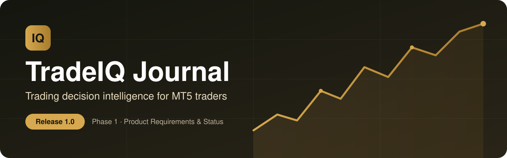
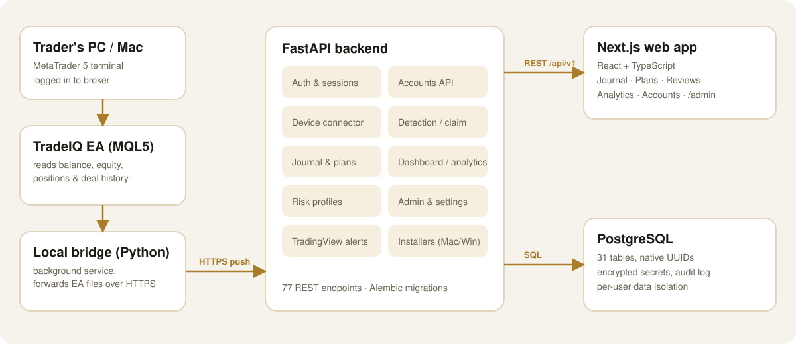
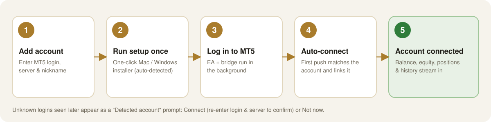
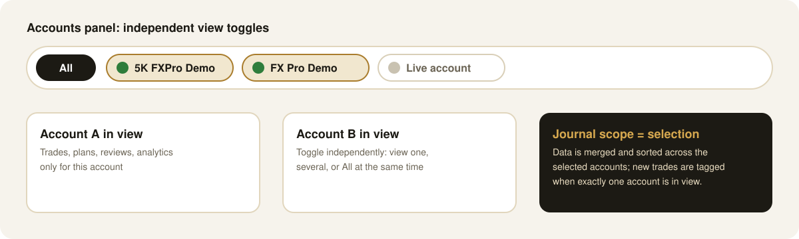

Product Requirements & Status · Phase 1 · Release 1.0
Journal built around the decision, connected to MetaTrader 5 automatically.
What the terminal reported: balance, equity, positions and deals synced from MT5.
What was planned: versioned trade plans created before execution.
What was done and learned: timestamped journal sections and post-trade reviews.
Promise: preserve decision timing, reconcile records, and explain process quality before interpreting profit.
Next.js · React · TypeScript
FastAPI · SQLAlchemy · Alembic
PostgreSQL · MQL5 EA · Python bridge · MetaApi (optional)

Capture an idea before execution; versions kept; discard marks no exposure.
Trades arrive from MT5 or are logged manually with entry, stop and target.
Setup, emotion, execution and management notes, each timestamped.
Plan adherence, learning and next action; review coverage tracked.

The installer runs once per computer; its connector secret is stable, so new accounts need no reinstall.

Platform stats, default MT5 method, per-user overrides, user and account search.
EA + bridge (primary, handles WebRequest error 4014). MetaApi hosted sync as an alternative.
Per-user webhook token; alerts matched to trades or dismissed.
Session-cookie auth, per-user isolation, encrypted broker credentials and connector secrets, hashed webhook secrets, audit log.
| Backend tests | 33 passing |
| Frontend type check and lint | Clean |
| Live MT5 on macOS (EA, bridge, auto-connect) | Verified with two demo accounts |
| Windows installer | Implemented, not validated on Windows |
| MetaApi hosted sync | Blocked by MetaApi billing |
| Production deployment | Not started |
Public HTTPS deployment, managed PostgreSQL, monitoring, backups; validated and signed installers.
Rule engine for drawdown and daily loss, auth hardening, rate limits, recovery.
Deal-to-journal reconciliation, screenshots, live updates, AI-assisted review summaries.
Release 1.0 Thank you.